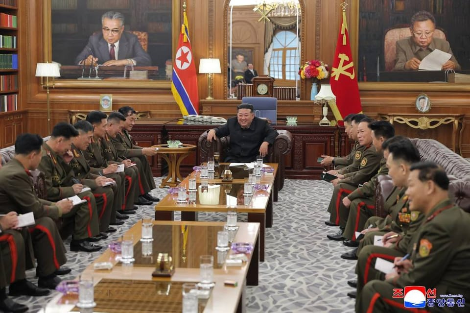

世界苦茶08月21日新闻 | 31条 | 美國開始在俄烏停火談判中靠近俄羅斯方案

美國開始在俄烏停火談判中靠近俄羅斯方案 | 美國大豆協會在關稅戰中承壓 | 中國限韓令似乎鬆綁 | 習近平赴藏慶祝自治區成立60週年
每日三條新聞解析（prompt0812調整）
苦茶数据
美元兑人民币：7.17（昨日7.18，前日7.18）
美元兑日元：147.38（昨日147.52，前日147.57）
上证指数：3775（昨日3725，前日3727）
标普500指数：6395（昨日6411，前日6449）
比特币：113693（昨日113604，前日115060）
布伦特原油：67.16（昨日65.87，前日66.21）
中国新闻
• 一带一路学生成清华新生主体 ：来自“一带一路”共建国家的学生成为清华大学本科国际新生主体。据中新社报道，清华大学星期三迎来约4000多名2025级本科新生。其中，中国大陆学生约3700人，港澳台学生约90人；国际学生300余人，来自50个国家和地区，“一带一路”共建国家学生成为主体。
• 习近平赴藏庆祝自治区成立60周年 ：西藏自治区9月1日将迎来成立60周年。中共总书记、国家主席习近平率中央代表团星期三中午乘专机抵达西藏首府拉萨，出席西藏自治区成立60周年庆祝活动。据央视新闻报道，习近平等在机场和拉萨市区受到西藏民众欢迎。中国全国政协主席、中央代表团团长王沪宁，中共中央办公厅主任蔡奇等两名政治局常委同机抵达。中共高层抵达拉萨前，拉萨市布达拉宫广场管理处星期六发布上述封闭管理公告，根据西藏自治区成立60周年庆祝活动工作安排，广场将从星期天下午4时起实施封闭管理，直到庆祝大会结束。
• 前海军参谋长李汉军被罢免 ：8月公开的中国官方文件首次披露，6月失去全国人大代表身份的解放军原海军参谋长李汉军，因涉嫌严重违纪违法被罢免代表职务。据中国人大网消息，中国全国人民代表大会常务委员会，在8月发布了7月15日出版的2025年第四号公报，刊登了第14届全国人大常委会第16次会议上通过的“关于个别代表的代表资格的报告”。报告首次披露，李汉军“涉嫌严重违纪违法”，今年5月6日，海军召开军人代表大会决定罢免李汉军的第14届全国人大代表职务。
• 韩艺人将赴华演出引关注 ：韩国女团和说唱歌手下月将在中国大陆相继举行演出，外界关注限韩令是否松绑。据韩联社报道，北京文艺界人士星期三透露，韩国女团Kep1er将于9月13日在福建省福州市举行专场演唱会，演出将以粉丝见面会的形式举行。韩国说唱歌手Kid Milli也将于9月14日在福州演出，他曾出演选秀节目《高等Rapper》和《Show Me The Money777》。
• 美称中国快速扩充核力量 ：美国军方和军控专家称，中国除了大规模增强常规军事火力外，也在迅速且持续地扩充核力量的规模与能力。据路透社星期三报道，美国战略司令部司令科顿在今年3月向国会说，中国大陆领导人习近平要求解放军在2027年前做好夺取台湾的准备。这一指示正推动北京扩充能够从陆海空发射的核武库。中国在2023年国防政策中重申长期承诺，即在任何情况下都不会首先使用核武器。所谓不首先使用政策，还包括中国不会对无核国家使用或威胁使用核武器。
• 王毅赴阿富汗参加三方外长会 ：中国外交部长王毅结束访问印度的行程后，星期三赴阿富汗进行访问，以及出席中国—阿富汗—巴基斯坦三方外长对话。据中国外交部官网消息，王毅星期三上午抵达喀布尔，对阿富汗进行访问并出席第六次中国—阿富汗—巴基斯坦三方外长对话。此前，王毅星期一访问印度，并与印度总理莫迪、外长苏杰生等人会面。
• 李强调研北京生物医药产业 ：李强8月20日在京调研生物医药产业，考察了昌平实验室、百济神州公司、北京飞镖国际创新中心孵化器。他主持座谈会说：强化产品研发、审评审批、管理使用等政策衔接协同配合，优化药品集采和谈判议价机制，加大高水平创新药应用指导力度。充分运用现代科学的理论、技术、材料等，深化中医药基础理论、诊疗规律、作用机理的研究阐释，丰富治疗方法，推进中医药现代化产业化。
亚太印太新闻
• 台军导弹试射发生自爆 ：台湾军方星期三凌晨在东部外海组织海空军力量进行实弹试射发生意外，导弹发射4秒后自爆。综合《自由时报》、中广新闻网报道，台湾军方在星期三凌晨3点到5点间分别试射了雄风反舰导弹、标准一型防空导弹，台空军也测试了爱国者防空导弹及天弓、天剑等各型弹种，几乎所有导弹都精准击中目标，唯独在清晨5点34分发射的美制爱国者二型导弹，发射后短短4秒钟就自爆，1分钟之后第二枚同型导弹正常发射。报道称，这是这是继2023年后，爱国者导弹再度于实弹演训中出现异常。
• 台湾网红馆长大陆直播受限 ：自称两岸“和平大使”的台湾网红“馆长”，二度前往中国大陆旅行直播后说，他被大陆列为“特殊分子”，无法开设抖音、B站等大陆平台账号，两次大陆行粗估已亏本400万元新台币。综合《联合报》和壹苹新闻网报道，陈之汉赴中国大陆旅游直播吸引众多目光，还数次登上大陆官媒报道，许多大陆网民因此认为他应该赚得盆满钵满。陈之汉星期二晚在澳门用餐时开直播，称上个星期天深圳行最后一天，得知无法观看中国大陆九三阅兵，接着又发现抖音、B站账号无法开通，让他心情低落，感慨“满坑满谷的抖音、B站都是我的影片，却不让我开账号，做生意根本无法做”。 （翻評：賣慘，他這兩次怎麼可能花400萬新臺幣？）
• 火球划过日本西部夜空 ：一颗火球划过日本西部的天空，多地居民目睹奇景，专家指出这只是自然现象，并非外星人入侵。日本共同社设在和歌山县那智胜浦町的摄像头在星期二晚上11时零8分捕捉到强光。突然出现的球状发光体划破漆黑的夜空，一边滑落一边扩大成巨大光团，将天空照得如同白昼。摄像头拍摄到的光芒持续约四秒。在近畿、四国、九州等西日本广大地区也观测到这个球状物体。
• 金正恩接见海外作战部队 ：8月20日，金正恩接见回国的人民军海外作战部队主要指挥员。他听取了相关军事活动具体情况汇报，高度评价参与俄库州解放战役部队的功劳，表明“现在，我们军队在做自己该做的事情，在做有必要的事情。今后也会这样做。”朝鲜将在党中央本部为相关部队指战员举办首次国家表彰仪式。
• 泰国被停职总理佩通坦8月21日上午在泰国宪法法院出席关于其涉嫌违宪的调查听证会： 听证会上，佩通坦就其与柬埔寨参议院主席洪森通话引发的争议接受质询。宪法法院将于本月29日就佩通坦是否存在违宪行为作出裁决。
科技新闻
• AI公司Manus年营收率达9千万美元 ：总部位于新加坡的中国人工智能起步公司Manus，年度收入运行率已达到9000万美元，突显出公司业务的价值。Manus联合创办人季逸超，星期三在我国出席一场活动时，透露了上述数据。支持Manus自主人工智能代理及早期产品Monica的起步公司Butterfly Effect发言人说，这项金额包括Manus所有业务的销售额。发言人也解释，收入运行率的计算方式，是将过去30天的收入乘以12。目前，Manus提供三个级别订阅服务，起价为每月19美元，最高达到每月199美元。免费账户仅涵盖基本功能，且使用受限。
• OpenAI财务长谈算力短缺 ：OpenAI首席财务官Sarah Friar周三表示，即便在营收方面不断创下里程碑，公司仍然面临人工智能算力短缺的持续压力。她在接受采访时说：“目前对GPU和算力的需求极为旺盛。我们面临的最大挑战就是一直处于算力不足的状态。这就是我们为什么推出‘星际之门’、为什么进行更大规模基础设施建设的原因。”Friar指出，算力需求的不断增加迫使公司必须分散风险并提升供给，除了与甲骨文和CoreWeave的合作外，公司与微软的合作依然非常紧密。“微软在未来很多年都会是重要的合作伙伴，我们在知识产权层面高度绑定，” Friar说，“别忘了，微软的人工智能产品就是基于OpenAI的技术打造的。”
• Meta推AI语音翻译功能 ：社媒巨头Meta周二宣布，正在向全球所有脸书和Instagram用户推出一款AI驱动的语音翻译功能。这项新功能在Meta AI已覆盖的所有市场均可使用，允许创作者将内容翻译成其他语言，从而触达更广泛的受众。AI翻译将采用创作者原声的音色与语调进行翻译，使配音在转换为新语言时仍保持真实感。创作者还可以选择使用唇形同步功能，使翻译内容与唇部动作保持匹配，从而呈现更自然的效果。首发版本支持英语与西班牙语的双向互译，后续将陆续增加更多语言支持。该AI翻译功能面向拥有一千名及以上关注者的脸书创作者以及全球所有公开IG账户开放。
• 民调稱71%美国人担心AI将永久取代工人： 路透社/益普索的一项新民意调查显示，71%的美国受访者对AI可能导致大规模永久失业感到强烈担忧。民意调查中，约77%的受访者担心AI可能被用来煽动政治混乱，这表明公众对人工智能制作虚构事件逼真视频的广泛担忧。针对4446名美国成年人的民调还显示，美国人对人工智能在军事上的使用保持谨慎。约48%的受访者认为政府绝不应该用AI决定军事打击目标，24% 的人认为可以允许，另有 28%不确定。超过一半的美国人对AI的电力消耗表示担忧，认为其对能源需求的压力巨大。约 2/3 受访者担心人们可能会放弃与他人的真实关系，转而依赖AI伴侣。
财经新闻
• 百度营收不及预期广告疲软 ：中国搜索引擎巨头百度星期三公布季度营收不及市场预期，表明在长期经济不确定性的影响下，广告市场持续疲软。路透社引述伦敦证券交易所汇编的数据，显示百度第二季度总营收为327.1亿元人民币；此前分析师平均预期为327.6亿元。百度今年2月发布2024年第四季度财报，显示公司营收下降2%，传统营销广告业务增长乏力，生成式人工智能带来的云业务支撑了公司的业绩。
• 中国或允许人民币稳定币使用 ：中国据报正考虑允许人民币稳定币的使用，以推动人民币在全球更广泛的采用，这标志着中国对数字资产立场的重大转变。路透社星期三引述消息人士报道，中国国务院将在本月晚些时候审议并可能批准一份人民币国际化路线图，其中包括追赶美国在稳定币领域的步伐。该计划预计将设定人民币在全球市场使用的目标，并明确国内监管机构的职责，同时包含风险防范的指引。
• 美大豆协会警告贸易悬崖 ：美国大豆种植者正处在“贸易和财务悬崖”边缘，难以承受与中国的长期贸易战。美国大豆协会主席卡莱布·拉格兰在星期二致总统特朗普的信中发出警告。他敦促政府与中国达成取消关税的协议，并尽可能促成大规模大豆采购。彭博社引述拉格兰的信函说：“美国大豆种植户无法承受与我们最大客户的长期贸易争端，大豆种植户承受极大的经济压力。价格持续下跌，与此同时，我们的种植户为农资和设备支付的费用大幅增加。”
• 英国7月通胀创新高 ：英国7月通胀率连续第二个月攀升，也是去年以来的最高水平，给英国政府和经济带来更多压力。彭博社报道，英国国家统计局星期三公布最新数据，7月消费者价格指数同比上涨3.8%，高于6月3.6%的升幅，创去年1月以来的最快上涨步伐。消费者价格指数上涨主要受机票、酒店和汽车燃油价格上涨的推动。
• 中国贷款市场利率三月不动 ：中国贷款市场报价利率连续三个月按兵不动，分析师称，当前处于政策观察期。据中新社报道，中国人民银行授权全国银行间同业拆借中心星期三公布最新一期LPR：一年期LPR为3.0%，五年期以上LPR为3.5%。两个期限品种的LPR均连续三个月保持不变。
• 中国拟整顿石化行业淘汰落后产能 ：中国政府即将对石化和炼油行业展开全面整顿，逐步淘汰小型设施，对落后产能进行升级，同时将投资引向先进材料领域。彭博社引述知情人士报道，旨在削减石化行业低附加值领域长期产能过剩的措施，可能在下个月出台。知情人士说，具体方案正在等待中国工业和信息化部的最终批准。知情人士称，拟议方案要求中国约四成、运营超过20年的石化装置进行改造，以提升产出效率。知情人士还说，鼓励工厂向特种精细化学品转型，减少在供应过剩的大宗化工品上的投入。
• 桑德斯支持补助换股权计划 ：美国自由派参议员伯尼·桑德斯周三力挺美国总统特朗普的 “补助换股权” 计划，也就是将美国对芯片制造商的补助转化为政府在这些公司的股权。其中，英特尔获得了 109亿美元补助。桑德斯在声明中表示：“如果芯片公司从联邦政府提供的巨额补助中获利，那么美国纳税人有权从这笔投资中获得合理的回报。”这些补助来自2022年的《芯片与科学法案》。该法案旨在通过390亿美元的补贴将芯片生产从亚洲吸引回美国，提升美国本土半导体产量。桑德斯表示：“我很高兴特朗普政府同意了我三年前提出的修正案。纳税人不应该向像英特尔这样利润丰厚的大公司提供数十亿美元的企业福利，却一无所获。” （翻評：特朗普的社會主義思想。）
俄乌战争
• 特朗普放弃乌克兰停火呼吁，与俄罗斯推动达成永久和平协议的立场更加一致： 美国总统唐纳德·特朗普放弃了停火要求，称他支持停火的“概念”，但可以在没有协议的情况下推动俄乌达成和平协议。特朗普无视乌克兰和欧洲一再呼吁，即在达成和平协议之前必须先停火，以结束俄罗斯对乌克兰人的滥杀无辜，并在8月18日坚称，“任何一方”都可能将其视为“不利因素”。停火是双方达成的一项协议，在不正式结束战争的情况下暂停战斗。英国查塔姆研究所乌克兰论坛研究员雅罗斯拉娃·巴比耶里表示，与受时间和地理范围限制的停火不同，和平协议力求达成一项永久性解决方案，通过一份具有法律约束力的文件正式结束战争。
• 俄称将继续向印供油 ：俄罗斯驻印度大使馆临时代办巴布什金说，尽管美国发出警告，俄罗斯仍预计将继续向印度供应石油，俄罗斯也希望很快与印度和中国举行三边会谈。路透社报道，巴布什金星期三在记者会上说：“我想强调的是，尽管政治局势如此，但我们可以预测印度的石油进口量将保持相同水平。”他预测，印度和俄罗斯将找到方法来克服美国最新的关税，以维护各自的“国家利益”。
• 俄罗斯“沙赫德”无人机坠落波兰领土后，华沙将提出抗议： 外交部长拉多斯瓦夫·西科尔斯基在社交媒体平台X上写道：“俄罗斯再次从东部侵犯我国领空，这证实了波兰对北约最重要的使命是保卫自己的领土。”西科尔斯基补充道：“外交部将对肇事者提出抗议。”此前，华沙国防部一位消息人士告诉国家通讯社波兰通讯社，坠落波兰村庄的物体是一架军用无人机，很可能是诱饵，但没有携带弹头。
国际新闻
• 伊朗称研发新型导弹应对以色列 ：伊朗防长纳西尔扎德称，已做好应对以色列新一轮攻击的准备，并宣布已研发出性能远超12天交火中使用的导弹。法新社报道，纳西尔扎德星期三告诉官方伊朗通讯社说：“在12天战争中使用的导弹是几年前制造的。如今我们已制造并拥有性能远超以往的导弹，如果犹太复国主义敌人再次发动袭击，我们必将使用这些导弹。”伊朗第一副总统阿里夫星期一也说，伊朗应“随时为对抗做好准备”。
• 民调显示美民众支持承认巴国 ：最新民意调查显示，58%美国人认为联合国所有成员国都应该承认巴勒斯坦国。路透社／益普索最新民意调查显示，只有约33%受访者不同意联合国成员国应该承认巴勒斯坦国，9%受访者则没有作出回答。另外，65%受访者认为美国应该在加沙采取行动，帮助面临饥荒的民众；28%受访者则不同意。持不同意见的人数中，包括41%的共和党人。
• 美国制裁海牙法官遭谴责 ：美国宣布对国际刑事法院两名法官和两名副检察长实施制裁，国际刑事法院谴责美国此举，称这是对其独立性的“公然攻击”。美国国务院星期三宣布制裁的四人包括法国法官尼古拉斯·吉卢，他正在审理一起针对以色列总理内坦亚胡发出逮捕令的案件。
• 特朗普要求美联储理事辞职 ：美国总统特朗普要求美国联邦储备局理事库克辞职，此举加大对美联储的压力。法新社报道，特朗普星期三在社交媒体Truth Social转发一篇彭博社的报道，并发文说：“库克必须立刻辞职！”报道指出，美国联邦住房金融局局长普尔特暗示库克可能涉及刑事犯罪，伪造银行文件和财产记录，以获取更优惠的贷款条件，可能构成抵押贷款诈欺。
• 特朗普重申美国将不再批准光伏或风电项目： 当地时间周三，美国总统特朗普表示，他的政府将不会批准光伏或风力发电项目，即便在那些电力供应不足的地区。特朗普当天在 Truth Social 平台发文称：“我们不会再批准破坏农田的风电或光伏项目。美国的愚蠢时代已经结束！”他此前也数次表态，任期内不会批准风电或光伏项目。此番表态之前，联邦政府已于上月收紧可再生能源的联邦许可流程。目前，所有审批权被收归内政部长道格·伯格姆办公室。可再生能源企业担心，原本按部就班即可获批的项目，如今可能将无法获得许可。特朗普周三的言论，预计会进一步加剧这些担忧。 （翻評：特朗普會大幅度縮減美國企業達到碳中和的速度，如果未來氣候危機更強，導致國際企業需要完成碳中和指標，美國企業將有很大劣勢。）